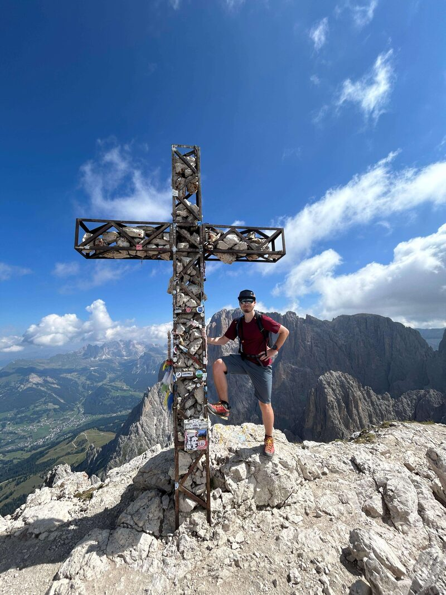
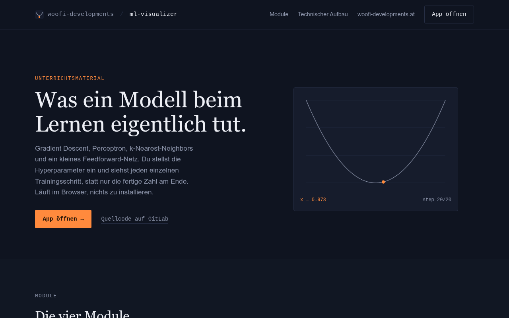

netviz.woofi-developments.at

NetViz
Design, visualize and simulate real enterprise networks in the browser — a drag-and-drop topology builder with live hop-by-hop packet simulation, a Wireshark-style capture view, and a CIDR calculator.

Fullstack developer / Carinthia, Austria.
I'm a software developer from Carinthia. I graduated from HTL Villach in 2026 with a Reife- und Diplomprüfung in computer science, and I've done software engineering internships at Infineon Technologies. I work on web applications, on apps in general — Android and desktop among them — and on projects in data science and AI.
Design, visualize and simulate real enterprise networks in the browser — a drag-and-drop topology builder with live hop-by-hop packet simulation, a Wireshark-style capture view, and a CIDR calculator.

A tutoring site, helping students master basic machine learning algorithms.
A multi-tenant infrastructure metrics platform — sign in with Google, Microsoft or GitHub, issue per-project API keys, and stream CPU, memory, disk and network metrics from any language into a self-hosted TimescaleDB.
Internship building the Experiments Management System dashboard for semiconductor manufacturing, on site in Villach.
I'm open for work, but I want to be honest about the calendar: until the end of September I'm interning, from October I serve my six months at the Bundesheer. Small freelance jobs fit alongside — anything bigger realistically starts in April 2027.
Full-time software developer internship.
Basic military service — six months.
Free for full-time and larger freelance projects.
My sona, art, music and the things I love outside of work.
Describe what should happen and I'll tell you what it takes to build it, even if it isn't worth it.
Start a conversation